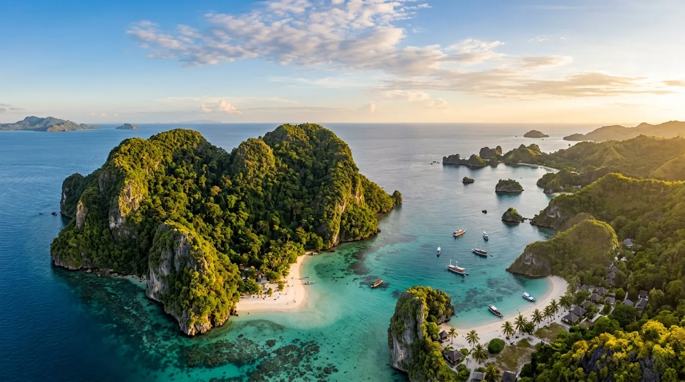

Kalau belakangan ini timeline media sosialmu dipenuhi foto pantai berlatar bukit kapur berbentuk hati dengan gugusan pulau kecil di kejauhan, besar kemungkinan itu adalah Pantai Teluk Asmara. Terletak di kawasan Malang Selatan, Jawa Timur, pantai ini makin ramai dibicarakan sebagai salah satu destinasi baru yang wajib dikunjungi, terutama oleh anak muda yang gemar berburu spot foto instagramable.
1. Kenapa Disebut Teluk Asmara?
Nama "Asmara" bukan tanpa alasan. Pantai ini dikelilingi bukit kapur yang jika dilihat dari atas membentuk lekukan menyerupai simbol hati. Perpaduan garis pantai berbentuk teluk dengan bukit berbentuk hati inilah yang akhirnya melahirkan nama Teluk Asmara, dan sekaligus menjadi daya tarik utama yang membedakannya dari pantai-pantai lain di sekitar Malang.
2. Pesona yang Bikin Netizen Jatuh Cinta
Air laut yang tenang, pasir putih yang lembut, serta gugusan pulau-pulau karang kecil yang tersebar di sepanjang garis pantai membuat banyak wisatawan menjulukinya sebagai "Raja Ampat mini"-nya Jawa. Berbeda dengan pantai selatan Jawa pada umumnya yang identik dengan ombak besar, ombak di Teluk Asmara justru relatif tenang, sehingga pengunjung bisa lebih leluasa berenang atau bermain air di tepian.

Dari atas bukit yang mengelilingi pantai, wisatawan bisa menikmati pemandangan lanskap Teluk Asmara secara menyeluruh: hamparan pasir putih, air laut biru kehijauan, dan pulau-pulau kecil yang berjajar rapi di kejauhan. Momen matahari terbenam (sunset) di sini juga jadi favorit karena siluet pulau-pulau kecil membuat suasana senja terasa lebih dramatis.
Dijuluki sebagai "Raja Ampat mini"-nya Jawa, Pantai Teluk Asmara menawarkan pesona alam yang memukau dengan air laut tenang, pasir putih, dan gugusan pulau karang yang menawan.
3. Aktivitas Seru di Teluk Asmara
- Berenang dan bermain air — ombak yang tenang membuat aktivitas ini aman dilakukan, terutama di pagi hari.
- Snorkeling — keindahan terumbu karang dan biota laut di sekitar pantai cocok dieksplorasi bagi yang membawa perlengkapan snorkeling sendiri.
- Camping — Teluk Asmara jadi salah satu spot camping favorit di kawasan Malang Selatan. Menghabiskan malam di tepi pantai sambil menatap langit berbintang bersama teman jadi pengalaman yang banyak dicari wisatawan.
- Flying fox — tersedia wahana flying fox dengan rute dari atas bukit menuju garis pantai, menambah keseruan bagi yang ingin memacu adrenalin.
- Trekking ringan — untuk mencapai titik pandang di atas bukit, pengunjung perlu menempuh jalur trekking dengan medan yang cukup landai namun tetap menantang.
4. Fasilitas di Lokasi
Meski tergolong destinasi yang baru naik daun, Teluk Asmara sudah dilengkapi fasilitas dasar yang cukup memadai, di antaranya area parkir, toilet, gazebo, warung makan, hingga tempat ibadah. Bagi yang ingin bermalam, tersedia pula pilihan villa di puncak bukit maupun penyewaan tenda bagi yang lebih memilih berkemah di sekitar area pantai.
5. Tips Berkunjung ke Pantai Teluk Asmara
- Datang pagi hari untuk mendapatkan suasana yang masih sepi sekaligus waktu terbaik untuk berenang.
- Bawa tabir surya ber-SPF tinggi karena aktivitas di pantai membuat kulit rawan terbakar sinar UV.
- Siapkan topi dan kacamata hitam agar tetap nyaman saat berjalan-jalan menyusuri pantai.
- Bawa bekal makanan dan minuman sendiri sebagai antisipasi jika warung di sekitar pantai belum buka atau terbatas.
- Bawa obat anti nyamuk/serangga serta hand sanitizer, mengingat lokasi pantai yang masih alami dan dikelilingi area perbukitan.
- Gunakan alas kaki yang nyaman, terutama jika berencana trekking ke atas bukit untuk menikmati pemandangan dari ketinggian.